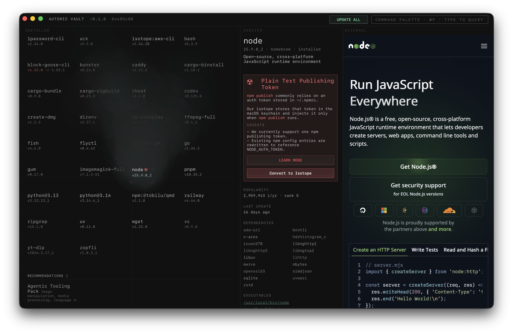
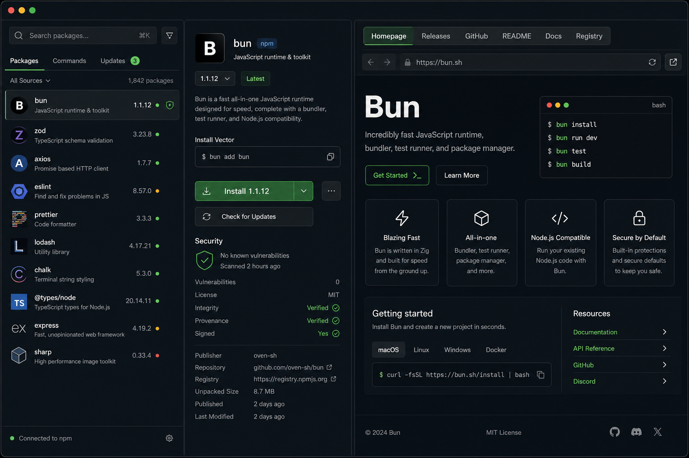

Surface Changed
The user-facing surface is the package detail workspace in the macOS GUI: DossierView, ExternalSurfaceView, and the package list selection flow in RootViewController.
Automic Vault already has a strong package-manager shape: searchable package inventory, a focused dossier pane, and an embedded external web surface. The next UI step is to turn that single external pane into a small, explicit navigation system for trusted package pages.
The user-facing surface is the package detail workspace in the macOS GUI: DossierView, ExternalSurfaceView, and the package list selection flow in RootViewController.
The GUI should own presentation and page selection. Nucleus should continue to fetch and normalize package metadata. Web rendering stays isolated in the passive WKWebView.
This can be additive. No stored fields need renaming. If metadata expands, add optional link fields and preserve existing homepage behavior for older package records.

The app is strongest when the package dossier remains operational and the external surface behaves like contextual evidence, not like a separate browser session.
PackageDetail.homepageURL trims the raw homepage, validates HTTP(S), redirects outdated GitHub repos to /releases/latest, and otherwise rewrites GitHub repo homepages to #readme. That is useful logic, but it hides the distinction between homepage, release notes, source repository, and README.
src/gui/PackageModels.swift:420, src/gui/PackageModels.swift:1095
ExternalSurfaceView.render sets externalURL from detail.homepageURL and loads that one URL after a 350ms delay. There is no selected-page state, no available-page list, and no way to move between package surfaces without leaving the app.
src/gui/ExternalSurfaceView.swift:255
RootViewController.select renders fallback details immediately, fetches fuller detail off the main thread, then refreshes the dossier and external surface. A link rail can attach to that same detail lifecycle without adding a new persistence boundary.
src/gui/RootViewController.swift:2264
The open-in-browser button appears only when the pane is hovered. That keeps the UI quiet, but page-switching should be persistently discoverable because it changes the user's context. Hover affordances can supplement the rail, but should not be the only way to find destinations.
Add a compact external page rail above the embedded web view. Default selection stays Homepage. Other pages appear only when the package metadata can derive or provide them.
| Page | When to show | Behavior |
|---|---|---|
| Homepage | Package has a valid homepage. | Default selected page. Preserve existing preview value. |
| Releases | GitHub repo can be inferred, or registry metadata exposes a release URL. | Show as a destination, not as an automatic homepage replacement. |
| GitHub | Homepage or metadata identifies a GitHub repository. | Open repo root. Useful when homepage is docs or product marketing. |
| README | GitHub repo can be inferred. | Use #readme or repository README URL. |
| Registry | Source is npm, PyPI, Homebrew formula, cask, or isotope. | Open the canonical package registry/source page. |
| Docs | Metadata provides docs URL or homepage/doc URL can be confidently derived. | Optional page. Do not guess aggressively. |

Introduce an additive PackageExternalPage value in the GUI model: label, kind, URL, availability reason, and whether it is the default. Keep homepageURL as a compatibility convenience or rename internally only after tests cover the transition.
Add an NSSegmentedControl or custom layer-backed button row to ExternalSurfaceView. It should persistently show available pages, use 44px minimum hit targets, and expose accessible labels.
Remember the selected external page per selected package during the session. On new package selection, default to Homepage unless the previous kind is available and explicitly retained by a user action.
Avoid hiding everything. If no release notes or repository can be derived, leave the rail compact and use an overflow menu or disabled state with a tooltip only when it helps explain absence.
Continue using placeholders for failed loads, but include a retry action and the selected page label. A failure on Releases should not make Homepage look broken.
Add focused tests for GitHub repo derivation, release URL creation, README URL creation, non-GitHub homepage preservation, and source-specific registry links.
Avoid making release notes replace the homepage automatically. When a package is outdated, the Releases page can show a badge or become the suggested alternate destination, but Homepage should stay stable.
Treat new URL derivation as security-sensitive metadata handling. Only derive high-confidence links from trusted package metadata and well-known hosts. Do not add runtime-configurable metadata endpoints.